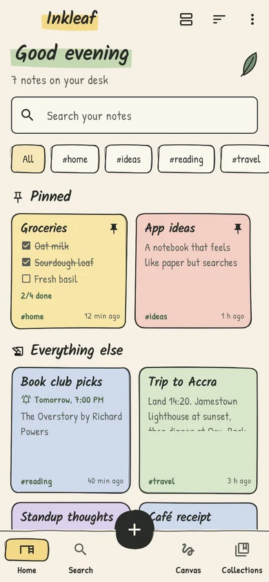
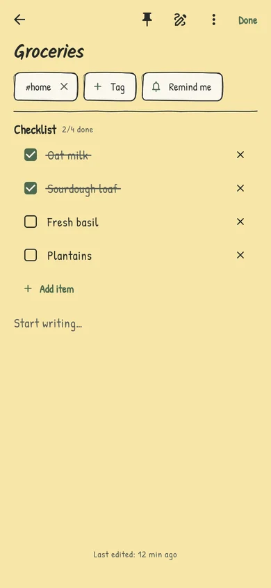
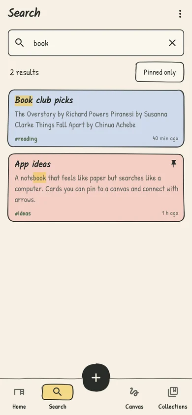
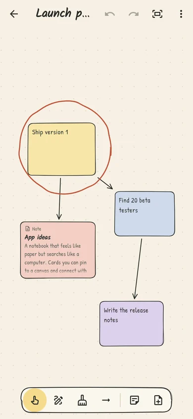

Your thoughts, in ink.
A notebook that feels like paper but searches like a computer. Write, tick things off, sketch, record and scan, and find any of it again in seconds. Your notes stay on your phone.




What's inside
- Notes and checklists. Formatting, links between notes, and items you tick off in pencil.
- Sketches and a canvas. Draw in a note, or spread ideas out as sticky notes with arrows.
- Voice notes and scans. Record a thought, or photograph a page and turn it into text, right on the phone.
- Search. Every word in every note, recording title and scan, with the matches highlighted.
- Reminders, collections and a home-screen widget (widget on Android).
- App lock and backups. Lock Inkleaf with your fingerprint, face or PIN, and export everything to one .zip.
Private by design
No accounts, no ads, no analytics. Your notes, recordings and scans are stored only on your phone. Read the privacy policy.